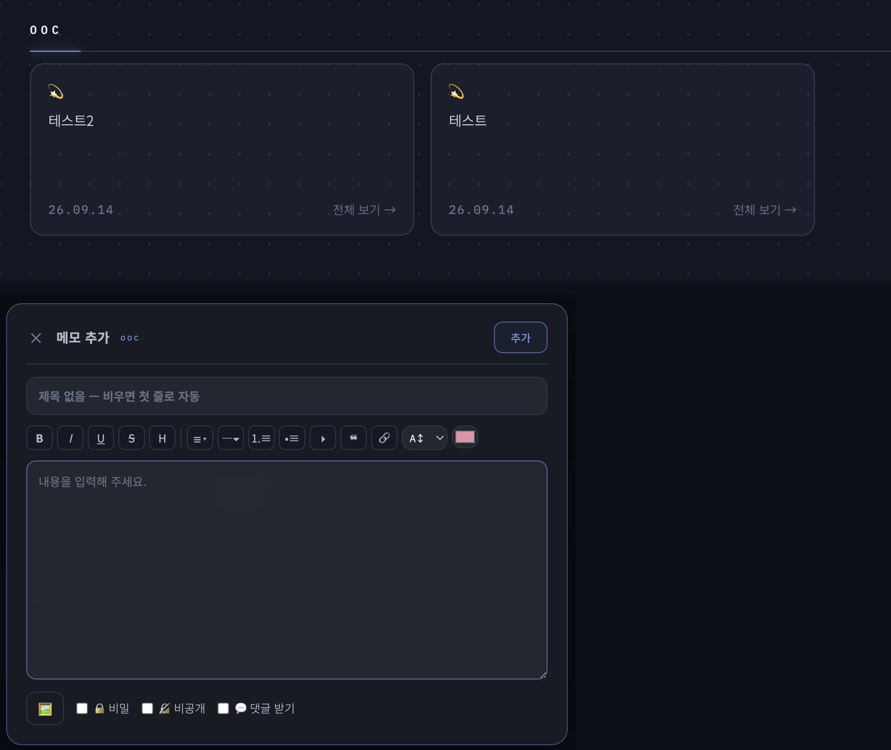

러브로그 · 글쓰기
메모형 글
카테고리 타입을 「메모」로 만들면 짧은 글들이 카드 그리드로 모입니다.
- 메모 게시판에서 WRITE를 누르면 팝업 작성 창이 뜹니다 — 제목(비우면 첫 줄로 자동)·서식 툴바·사진 4장·🔒 비밀·🔏 비공개·💬 댓글까지 팝업에서 끝.
- 수정도 팝업으로 열립니다(비밀 메모 수정만 글쓰기 화면).
- 사진 있는 메모는 카드 위에 썸네일이 뜹니다.
- 메모는 💬 댓글이 기본으로 꺼져 있으니 받고 싶은 메모만 켜세요.
- 한 줄에 몇 장 보일지(2~4)는 테마·레이아웃에서.

사진 자리img/ll-memo-grid.png